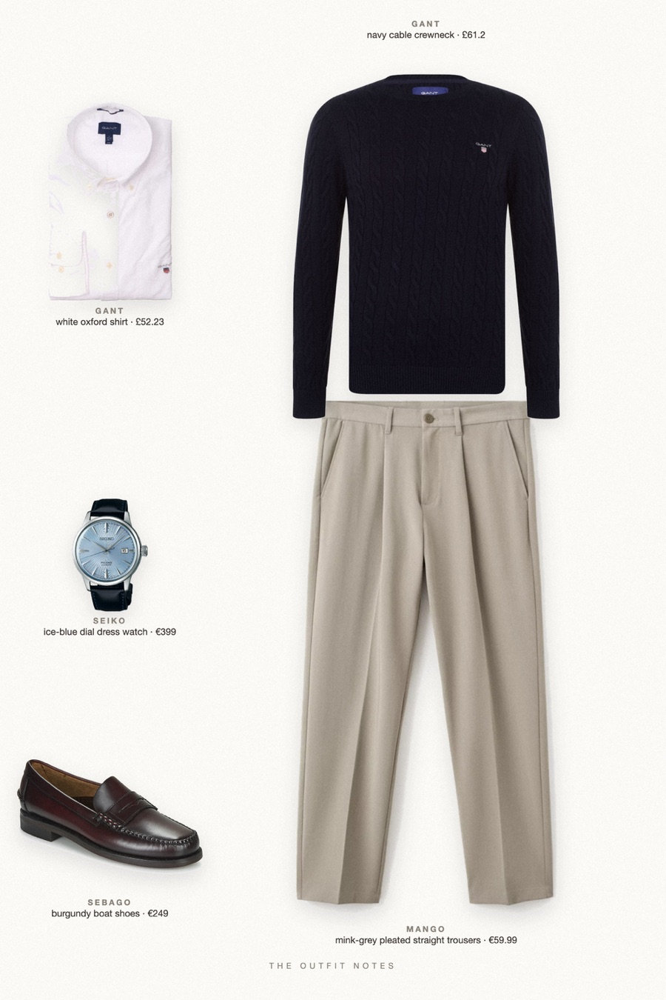
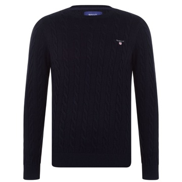
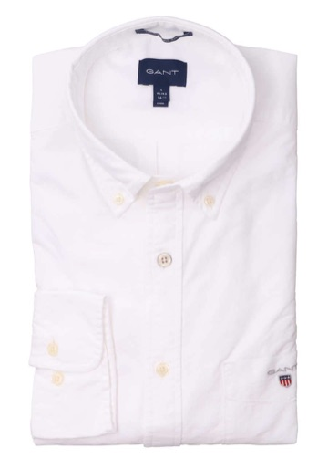

Cape Cod Navy
what a Kennedy would wear in autumn

What a Kennedy would wear in autumn: a navy cotton cable-knit crewneck over a crisp white Oxford shirt, mink grey pleated trousers and burgundy Sebago boat shoes. A Seiko Presage watch keeps it quiet. Old money style for men, 2026 autumn, preppy and seaside, built from attainable pieces.
The pieces
This page contains affiliate links: if you buy through them, we may earn a commission at no extra cost to you. Disclosure.

GANT
Navy cable crewneck
Shop
GANT
White oxford shirt
Shop Mango
Mango
Mink-grey pleated straight trousers
Shop Sebago
Sebago
Burgundy boat shoes
Shop Seiko
Seiko
Ice-blue dial dress watch
Shop
Prices are indicative, taken when the look was published, and may have changed. Pictures of the outfit are AI-generated illustrations of real products; the product photos are the retailers' own.
Published 2 October 2026.